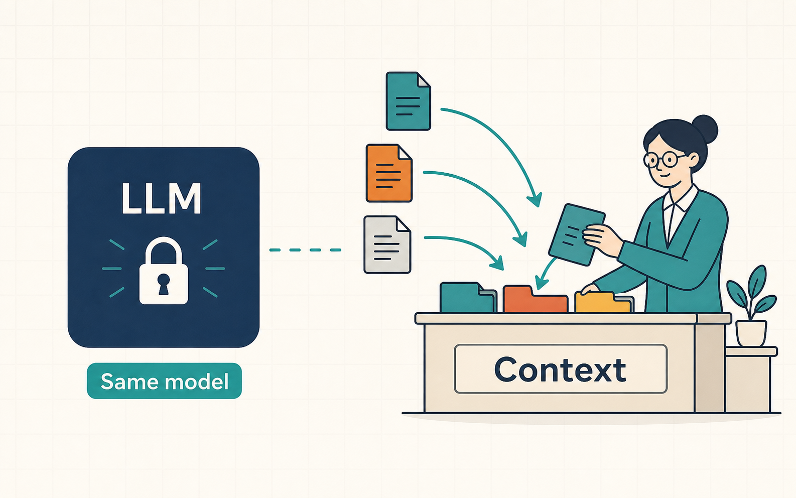
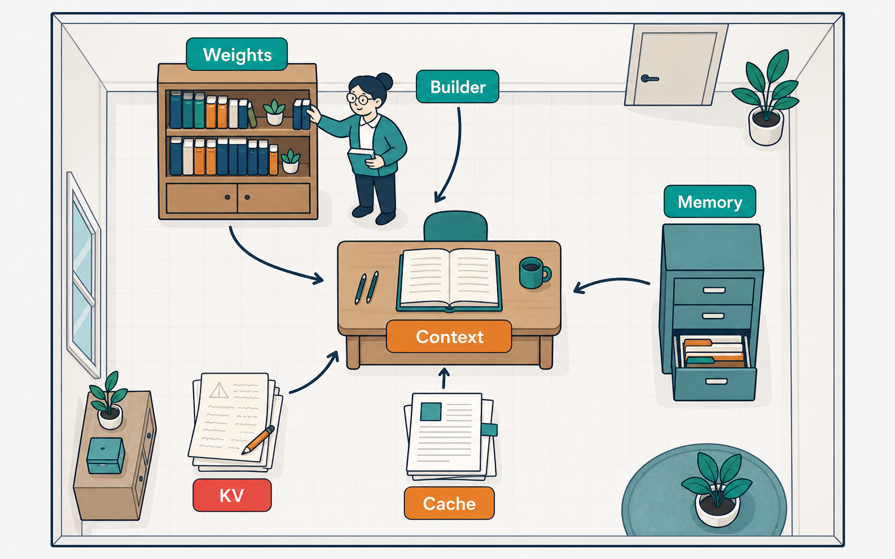
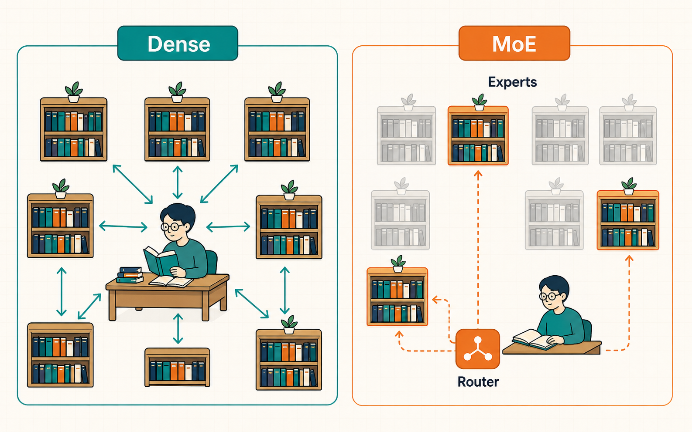
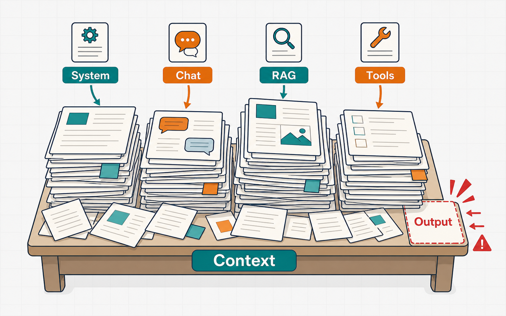
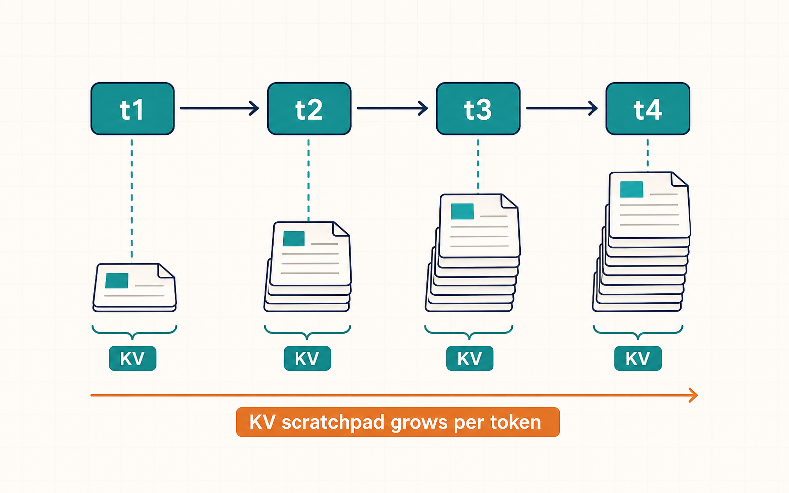
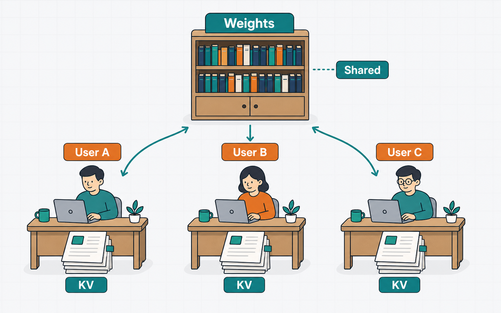
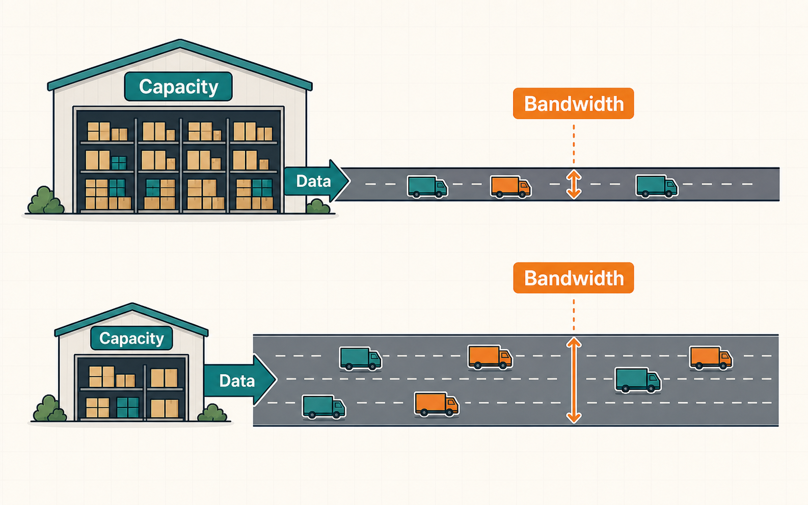
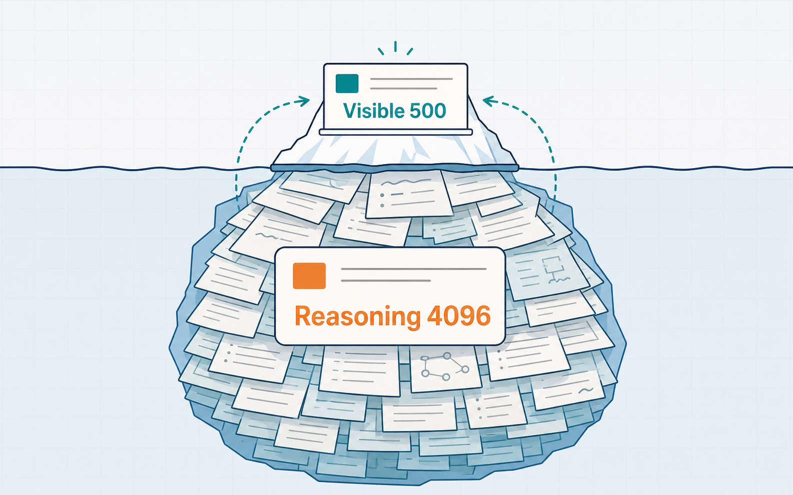
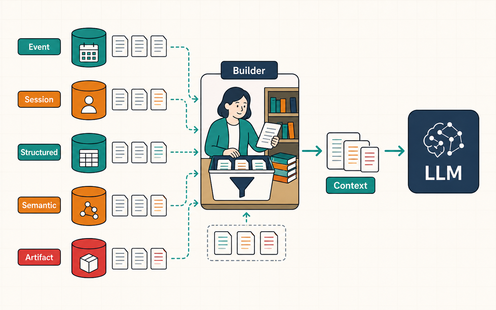
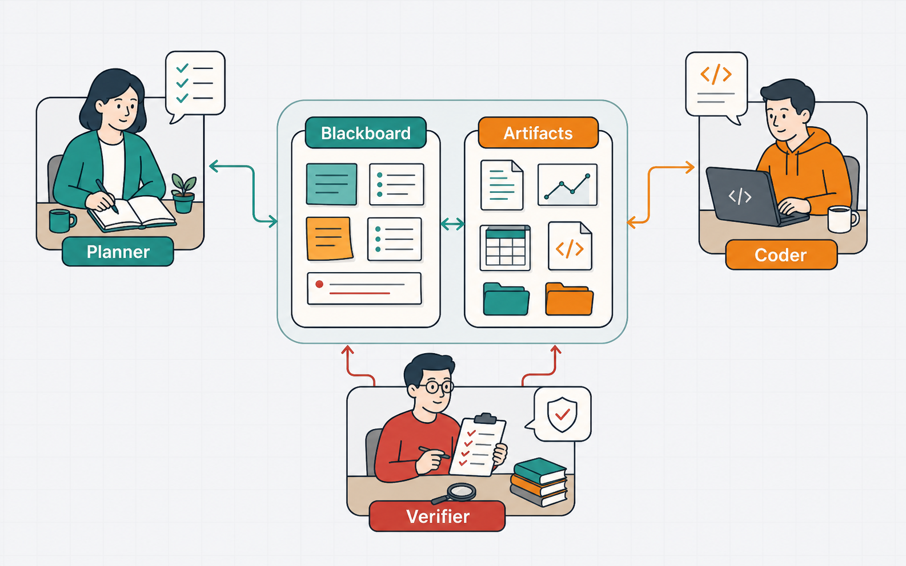

このAIは、本当に会話を覚えたのか？
AIが前回の会話を覚えているように見えるとき、まず区別すべきなのは、「モデル自身が学習した」のか、「システムが以前の情報をもう一度モデルへ渡した」のかという点である。この違いを理解しないと、会話履歴、長期メモリ、コンテキスト、追加学習を同じ仕組みとして扱ってしまう。
通常の会話では、モデルの重みは前回とほぼ同じままである。外部システムが過去の発言や保存済みのユーザー情報を取り出し、今回の入力と一緒にコンテキストへ入れることで、モデルは続きから話しているように振る舞う。つまり、会話を覚えているのはモデル単体ではなく、保存・検索・再投入を行うシステム全体である。

仕事部屋にある5種類のメモリ
LLMの「メモリ」という言葉には性質の異なる仕組みが含まれるため、仕事部屋にある道具として分けて考えると理解しやすい。モデルの重みは、すでに身につけた一般知識や能力が並ぶ本棚である。コンテキストは、今回の作業に必要な資料を広げる机であり、KVキャッシュは作業中だけ使う計算メモに相当する。
Prefix CacheやPrompt Cacheは、何度も使う共通資料をあらかじめコピーしておく仕組みである。会話やユーザー情報を保存する長期メモリは、机から離れた書庫やファイルキャビネットに当たる。そしてContext Builderは、書庫から今回必要な情報だけを選び、机の上へ並べる司書の役割を担う。それぞれ実体、寿命、共有範囲が異なるため、単に「メモリが多い」とひとまとめにはできない。

| 名称 | 部屋の比喩 | 実体 | 寿命 | 主な役割 |
|---|---|---|---|---|
| モデルの重み | 本棚 | 数十B〜数百B個のパラメータ | モデル更新まで | 学習済み知識・能力 |
| コンテキスト | 机の上 | 今回モデルへ渡したトークン | 1回の推論 | 現在の作業記憶 |
| KVキャッシュ | 計算メモ用紙 | GPU上のK/Vテンソル | リクエスト実行中 | 過去トークンの再計算防止 |
| Prefix／Prompt Cache | コピー済み共通資料 | 共通プロンプトの計算結果 | 数分〜任意のTTL | 速度・コストの最適化 |
| 会話・長期メモリ | 書庫・キャビネット | DB・ファイル・ベクトル索引 | 日〜永続 | ユーザー・案件・作業の記憶 |
本棚の大きさがモデルサイズ
モデルサイズは、モデルが持つパラメータ、すなわち重みの個数を表す。「32B」のBはBillion、10億を意味するため、32Bモデルには約320億個のパラメータがある。ただし、パラメータ数が大きいほど必ず回答品質が高いとは限らず、学習方法やデータ、モデル構造も品質を左右する。
重みだけの理論容量は、「パラメータ数[B] × 1パラメータ当たりのbit数 ÷ 8」で概算できる。32BモデルならBF16では約64GB、8bitでは約32GB、4bitでは約16GBとなる。70Bモデルではそれぞれ約140GB、70GB、35GBである。ただし、これは重みだけの値であり、実際の推論にはKVキャッシュ、作業領域、量子化の管理情報、通信バッファ、メモリ断片化への余裕も必要になる。そのため、「70B INT4は35GBだから40GBのGPUへ安全に載る」とは判断できない。
| モデル規模 | BF16 / FP16 | FP8 / INT8 | INT4 |
|---|---|---|---|
| 32B | 64 GB | 32 GB | 16 GB |
| 70B | 140 GB | 70 GB | 35 GB |
| 753B | 1,506 GB | 753 GB | 376.5 GB |
理論値 重みのみ。実VRAMは KVキャッシュ・Activation・Workspace・通信バッファ・量子化メタデータ・断片化余裕が加わり増える。
Dense と MoE の違い

Denseモデルでは、原則としてすべての重みが各トークンの計算に参加する。一方、MoEは多数の専門家、すなわちExpertを保存しておき、トークンごとに一部だけを選んで使う構造である。素材の例ではGLM-5.2の総パラメータは753Bであり、関連するGLM-5の報告では1トークン当たりのActive parametersは約40Bとされている。MoEでは「本棚全体を置く容量」と「今回実際に参照する本の量」を別々に考える必要がある。
机の広さがコンテキスト
コンテキストは、モデルが1回の推論で参照できる情報の範囲であり、仕事部屋の机の広さに相当する。机の上には現在の質問だけでなく、System Prompt、Toolの定義、過去の会話、会話の要約、RAGで取得した文書、長期メモリ、Toolの実行結果が並ぶ。さらに、これから生成する回答や、モデルによってはReasoning Tokenも同じ上限を使う。
そのため、入力だけでコンテキスト上限を使い切ることはできない。たとえば40,960トークン対応のモデルでも、回答やReasoningに8,000トークンを確保するなら、入力へ許可できる量はそれより小さくしなければならない。Productionでは、モデルが公称するAdvertised context、推論サーバーが許可するServing context、アプリケーションが利用者へ提供するApplication contextを分けて設計する。
| 種類 | 意味 |
|---|---|
| Advertised context | モデルが公称する最大値 |
| Serving context | 推論サーバーで設定した最大値 |
| Application context | アプリが実際に許可する上限 |
1Mトークン対応という仕様も、「常に1Mを渡すべき」という意味ではない。長い入力はPrefill、すなわち回答生成前の読み込み処理を長くし、KVキャッシュを増やし、同時利用可能数を減らす。情報が増えすぎると必要な記述を見つけにくくなるため、長期記憶をすべて机へ積み上げるのではなく、今回必要な情報だけを選ぶことが重要である。

KVキャッシュは作業中の計算メモ
KVキャッシュは、モデルがすでに読んだトークンを毎回最初から計算し直さないための作業メモである。Transformerは各層でAttentionに使うKeyとValueを計算する。過去のトークンについて得られたKeyとValueをGPUメモリへ保持しておくことで、次のトークンを効率よく生成できる。
MHAやGQAを使うモデルでは、1リクエストのKV容量を「2 × 層数 × KV Head数 × Head次元 × 1要素のbytes × Sequence長」で概算できる。先頭の2はKeyとValueの二つを保存するためである。Qwen3-32Bを、64層、8 KV Heads、Head次元128、BF16の2 bytesと仮定すると、1トークン当たり262,144 bytes、すなわち256KiBになる。
この条件では、8Kトークンで約2GiB、32Kで約8GiB、40Kで約10GiBのKVキャッシュが1リクエストに必要になる。KVをFP8で保持できれば容量は概ね半分になるが、重みをINT4へ量子化しただけでKVも自動的に4bitになるわけではない。「モデルの重みが何bitか」と「KVキャッシュを何bitで保持するか」は別の設定である。

| 1リクエストのSequence長 | BF16 KV | FP8 KV |
|---|---|---|
| 8K tokens | 2 GiB | 1 GiB |
| 32K tokens | 8 GiB | 4 GiB |
| 40K tokens | 10 GiB | 5 GiB |
利用者が増えると、作業メモも人数分増える
同時利用数を考えるときに重要なのは、モデルの重みは利用者間で共有できても、KVキャッシュは生成中のSequenceごとに必要になることである。一つの本棚を複数人で共有することはできるが、作業中の計算メモまで一枚にまとめることはできない。
Qwen3-32B相当のBF16 KVでは、平均8KのSequenceを3本保持すると約6GiB、10本なら約20GiBを消費する。平均32Kになると、10本だけで約80GiB、20本では約160GiBに達する。人数とコンテキスト長を掛け合わせることで、KVが急速に増えることが分かる。

| 同時Sequence | 平均Sequence長 | KVキャッシュ容量 |
|---|---|---|
| 3 | 8K | 6 GiB |
| 10 | 8K | 20 GiB |
| 10 | 32K | 80 GiB |
| 20 | 32K | 160 GiB |
96GBのGPUに、理論上約32GBのFP8重みを置き、32K当たり約8GiBのKVを使うと仮定すると、重み以外の全領域をKVへ使った単純計算でも同時Sequenceは7本程度である。実際には推論エンジンの作業領域や運用上の余裕が必要なので、提供可能数はさらに少なくなる。したがって、「利用者が10人いるか」ではなく、「ピーク時に何本のSequenceが、合計何トークン生存するか」で設計する必要がある。
廊下の太さが、トークンを運ぶ速さ
- 答えを1語作るたび、大量の重みとKVキャッシュを読みます。
- メモリは資料を置く倉庫、演算器は作業机に当たります。
- 倉庫と机を結ぶメモリ帯域が、LLMの応答速度を決めます。
参考: Qiita「なぜLLMは遅いのか？ KV CacheとSpeculative Decodingの数学的理解」
ハードウェアを比較するときは、メモリ容量とメモリ帯域を分けて考える必要がある。容量はモデルやKVキャッシュを置けるかどうかを決め、帯域はそれらをどれだけ速く読み出せるかを左右する。大きな倉庫を持っていても、搬出する廊下が細ければ、荷物を運ぶ速度は上がらない。
下表の例では、RTX 5090は32GBと容量が限られる一方、理論メモリ帯域は1,792GB/sである。DGX Sparkは128GBを持つが帯域は273GB/sであり、Mac Studio M3 Ultraは最大512GB、819GB/sである。A100 80GB SXMは80GBと2,039GB/sを備える。この違いにより、「大きなモデルを載せられる機械」と「小さめのモデルを高速に生成できる機械」は一致しない。

| ハードウェア | 容量 | 方式 | 理論メモリ帯域 |
|---|---|---|---|
| RTX 5090 | 32 GB | GDDR7 | 1,792 GB/s |
| RTX 3090 | 24 GB | GDDR6X | 936 GB/s |
| A100 80GB SXM | 80 GB | HBM2e | 2,039 GB/s |
| DGX Spark | 128 GB | LPDDR5X統合 | 273 GB/s |
| Mac Studio M3 Ultra | 最大512 GB | 統合メモリ | 819 GB/s |
短いコンテキストのDenseモデルをBatch 1で動かす場合、生成速度の粗い上限は「メモリ帯域 ÷ 重み容量」で見積もれる。32B Q4を理論16GBとするとRTX 5090は112 tok/s、70B Q4を35GBとするとDGX Sparkは7.8 tok/sが帯域上の天井となる。これらはKernel、演算、通信、量子化解除、KV読み出しを無視した理論Rooflineであり、実測予想値ではない。コンテキストが長くなればKVの読み出しも増えるため、実際の上限はさらに下がる。
Reasoningは画面に見えない下書き
Reasoningは、モデルが最終回答を出す前に生成する下書きや検討過程に相当する。画面に表示されない場合でも、通常は1トークンずつDecodeされるため、生成時間、コンテキスト、KVキャッシュを消費する。非表示にすることと、計算しないことは同じではない。
たとえば、利用者に見える回答が500トークンでも、内部で4,096トークンのReasoningを生成していれば、合計生成量は4,596トークンになる。50 tok/sなら、Reasoningなしの回答は約10秒だが、Reasoning込みでは約1分32秒かかる。生成量は9.19倍となり、Qwen3-32B相当のBF16 KVではReasoning部分だけで約1GiBの追加メモリを使用する。この値は特定条件による計算例であり、一般的な平均値ではない。

| Reasoning | 総生成量 | なし比 | 完了時間(50tok/s) | 追加KV |
|---|---|---|---|---|
| 0 | 500 | 1.00× | 10秒 | 0 |
| 1,024 | 1,524 | 3.05× | 30.5秒 | 0.25 GiB |
| 4,096 | 4,596 | 9.19× | 1分32秒 | 1 GiB |
| 16,384 | 16,884 | 33.8× | 5分38秒 | 4 GiB |
| 25,000 | 25,500 | 51× | 8分30秒 | 約6.1 GiB |
概算 Visible 500トークン・50 tok/s・KV 256KiB/token を仮定。追加KV = Reasoning tokens × KV bytes/token。
Reasoning EffortのLow、Medium、Highも、通常は固定されたトークン数を意味しない。Effortはモデルにどの程度深く考えさせるかを示すシグナルであり、実際のReasoning量は問題の難しさによって変化する。運用では、「Highなら何トークン」と決め打ちするのではなく、タスク別にReasoning Tokenの平均値とp95を計測する必要がある。
会話を覚えるのは、モデルではなく司書
会話記憶の本質は、過去の情報を保存し、必要なときに取り出し、現在のコンテキストへ戻すことである。素材で整理された2026年6月時点の方式では、OpenAIやGoogleは以前の応答やInteractionをサーバー側で連結する仕組みを提供する。一方、AnthropicのMessages APIは基本的にステートレスであり、必要な履歴を開発者が送信し、Memory Toolの保存先も原則として開発者側が用意する。
| 提供者 | 会話状態 | 長期的な状態 | 管理主体 |
|---|---|---|---|
| OpenAI | previous_response_id | Conversations API | OpenAI または自前 |
| previous_interaction_id | Interaction object | ||
| Anthropic | Messages配列を毎回送信 | Memory Tool | 原則として開発者 |
素材記載の2026年6月時点の整理。
ローカルAIでも原理は同じである。モデルサーバーはできるだけステートレスに保ち、会話ログ、現在のタスク状態、ユーザー設定、検索用インデックス、文書やコードなどのArtifactを外部へ保存する。Context Builderが最新数ターン、Rolling Summary、今回関連するMemory、現在のTask Stateを選び、モデルへ渡す構成が扱いやすい。

全履歴を毎回投入すると、入力トークン、Prefill時間、KVキャッシュが増え、無関係な情報によって回答品質も下がり得る。また、KVキャッシュは巨大で監査や検索が難しいため、長期記憶の正本には向かない。個人の好みや案件情報をFine-tuningで重みへ焼き込むと削除や更新も難しくなるため、長期記憶は構造化DBや文書ストアへ置くのが基本である。
マルチエージェントは、全員に全資料を配らない
マルチエージェントでは、Workerを増やすだけでなく、各Workerへ何を渡すかが重要である。Planner、Coder、Verifierの全員へ同じ巨大な会話履歴を送ると、コンテキストとKVキャッシュがWorker数に応じて増え、関係のない情報まで各Workerが処理することになる。

望ましい構成は、中央に共有Task State、Decision Log、Artifact Indexを持つBlackboardを置き、各Workerには役割に必要な資料だけを渡すことである。WorkerがCoordinatorへ返す情報も、長い生ログではなく、結論、根拠、未解決事項、作成したArtifactへの参照へ圧縮する。共有メモリを巨大な会話ログではなく、構造化されたBlackboardとArtifact Storeとして設計することで、容量、速度、監査性を同時に改善できる。
最後に持ち帰る4つの問い
LLM基盤を理解するために、最後に四つの問いへ戻ると全体を整理できる。一つ目は「モデルが載るか」であり、主に重み、KVキャッシュ、作業領域を含むメモリ容量で決まる。二つ目は「十分に速いか」であり、メモリ帯域、読み出す重みとKVの量、Reasoningを含む総生成量で決まる。
三つ目は「同時に何人使えるか」であり、登録者数ではなく、ピーク時に生存するSequence数と総トークン数を確認する。四つ目は「会話を覚えられるか」であり、モデルサイズではなく、保存先、検索方法、要約、Context Builderの設計を確認する。この四つを分けて問うことで、「大きいモデルなら速く、長く覚え、多人数で使える」という誤った一括判断を避けられる。
載るか？
＝ メモリ容量
速いか？
＝ 帯域 ＋ 読み出し量
何人使えるか？
＝ 生存 KV
覚えるか？
＝ Memory Service
どれだけ考えさせるか？
＝ Reasoning（見えない生成）
数値を確かめる資料室（付録）
付録の数値表は、単なるスペック一覧ではなく、本文の判断を検算するための資料室として使う。重み容量、KV bytes/token、同時Sequence数、帯域Roofline、Reasoning時間は、それぞれ前提となるモデル構造、量子化方式、dtype、コンテキスト長、Batch条件が異なる。表を見るときは、まず条件が自分の環境と一致しているかを確認する。
また、数値には「理論値」「概算」「単一例」「特定ベンチマーク」の区別が必要である。帯域から求めたtok/sは理論Rooflineであり、実測値ではない。GLM-5.2のMLA容量は実装仮定に基づくコア部分の概算であり、公式文書に掲載されたReasoning量は平均ではなく単一例である。Aresの結果も特定モデルとTAU-Bench Retailにおける集計であり、すべての業務へ同じ倍率を適用するものではない。
ハードウェア全表 ／ tok/s 理論上限
| ハードウェア | 8B Q4 (4GB) | 32B Q4 (16GB) | 70B Q4 (35GB) |
|---|---|---|---|
| RTX 5090 | 448 | 112 | 容量不足 |
| RTX 3090 | 234 | 58.5 | 容量不足 |
| A100 80GB SXM | 510 | 127 | 58.3 |
| DGX Spark | 68.3 | 17.1 | 7.8 |
| Mac Studio M3 Ultra | 205 | 51.2 | 23.4 |
理論値 Dense・Batch1・Q4・KV無視・オーバーヘッド無視の帯域上限（tok/s）。
32B Q4 — Context長による低下（KV読み出しを加味）
| ハードウェア | KV無視 | 8K | 32K |
|---|---|---|---|
| RTX 5090 | 112 | 98.7 | 72.9 |
| RTX 3090 | 58.5 | 51.6 | 38.1 (OOM) |
| A100 80GB SXM | 127 | 112 | 82.9 |
| DGX Spark | 17.1 | 15.0 | 11.1 |
| Mac Studio M3 Ultra | 51.2 | 45.1 | 33.3 |
RTX 3090の32Kは重み16GB＋KV約8.6GB＝約24.6GBで24GBを超過しOOM。
GLM-5.2 MLA — KVコア概算
| Context | MLAコアKV概算 |
|---|---|
| 32K | 約2.74 GiB |
| 128K | 約10.97 GiB |
| 1,048,576 | 約87.75 GiB |
概算 MLAコア部分のみ。DSA Indexer等は別途。
tok/s と完了時間 ／ Reasoning 公式単一例 ／ Ares研究
| 生成速度 | 平均ITL | 600トークン生成 |
|---|---|---|
| 7 tok/s | 約143ms | 約85.6秒 |
| 25 tok/s | 40ms | 約24秒 |
| 50 tok/s | 20ms | 約12秒 |
| 100 tok/s | 10ms | 約6秒 |
| 1,000 tok/s | 1ms | 約0.6秒 |
| 例 単一例 | Reasoning | 非Reasoning出力 | 倍率 |
|---|---|---|---|
| OpenAI公式例 | 1,024 | 約162 | 約7.3× |
| Gemini公式例 | 297 | 171 | 約2.74× |
| Effort方式 特定ベンチ | 成功率 | Token消費 |
|---|---|---|
| 常時Low | 35.0% | 25K |
| 常時Medium | 47.3% | 137K |
| 常時High | 54.8% | 1,007K |
| Ares動的選択 | 58.5% | 476K |
Ares：gpt-oss-20b／TAU-Bench Retail の集計であり、一般則ではない。